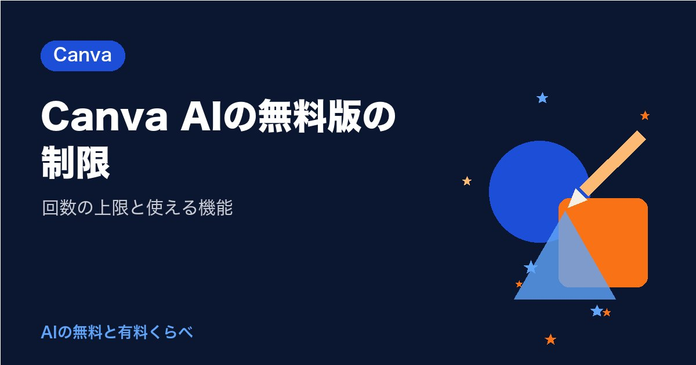

6つのAIの無料と有料
ChatGPT・Gemini・Claude・Copilot・NotebookLM・Canva AIの6つについて、無料でどこまで使えるか、有料にすると何が変わるか、会社で使うときの注意を、あなたが自分で選べるように表で比べます。料金や制限は変わりやすいため、毎月、公式の情報で確かめ直し、記事ごとに確認日を書いています。書いているのは、大手印刷会社で約20年働いたのち独立し、毎日の仕事でAIを使っている運営者です。だから「会社のPCで、今日から何ができるか」という目線でお伝えできます。
はじめての方へ：まず読みたい記事
 Claude2026-10-23
Claude2026-10-23Claude MaxとProの違い｜どんな人向け？月100ドルからの価値を公式の料金ページで確かめた
Claude MaxとProの違いを、2026年10月23日に公式の料金ページで確かめてまとめました。Proは月20ドル（年払いなら月17ドル相当）、Maxは月100ドルからで、Proの5倍か20倍の使用量、優先アクセス、月ごとのAPIクレジットが付きます。5時間ごとの枠と週の上限の考え方、会社員の使い方別にどちらが向くかを表で比べます。
 比較2026-10-21
比較2026-10-21生成AIの無料おすすめ｜会社員がまず試したい6つ
生成AIの無料おすすめを、会社員がまず試したい6つに絞って紹介します。ChatGPT・Gemini・Claude・Copilot・NotebookLM・Canva AIの無料版でできること、無料版の上限、仕事の場面ごとの選び方、会社の情報を入れる前の注意を表でまとめました。
 比較2026-10-21
比較2026-10-21生成AIの課金比較｜有料にする前の3つの確認
生成AIの課金比較を、有料にする前に確かめたい3つのことと一緒にまとめました。ChatGPT・Gemini・Claude・Copilot・NotebookLM・Canva AIの有料プランの料金、支払いの通貨や年払い・解約の違い、会社の情報を入れる前の注意を表で紹介します。
 比較2026-10-21
比較2026-10-21生成AIのサブスク比較｜月額で選ぶ6つのAI
生成AIのサブスク比較を、月額の料金で選びたい会社員向けにまとめました。ChatGPT・Gemini・Claude・Copilot・NotebookLM・Canva AIの個人向け有料プランの月額、無料版との違い、月1,000円以内で選べるプランを、公式の料金で表にしています。
 Canva2026-10-21
Canva2026-10-21Canva AIの資料作成のやり方｜会社の資料に使うときの注意
Canva AIの資料作成のやり方を、公式ヘルプで確かめてまとめました。Canvaドキュメントで文章のたたき台を作る、要約する、デザインを資料に変える手順と、無料と有料の違い、会社の資料に使うときのデータの扱いと注意点を表で整理しています。
新着記事
Claude2026-10-23Claude MaxとProの違い｜どんな人向け？月100ドルからの価値を公式の料金ページで確かめた
Claude MaxとProの違いを、2026年10月23日に公式の料金ページで確かめてまとめました。Proは月20ドル（年払いなら月17ドル相当）、Maxは月100ドルからで、Proの5倍か20倍の使用量、優先アクセス、月ごとのAPIクレジットが付きます。5時間ごとの枠と週の上限の考え方、会社員の使い方別にどちらが向くかを表で比べます。
比較2026-10-21生成AIの無料おすすめ｜会社員がまず試したい6つ
生成AIの無料おすすめを、会社員がまず試したい6つに絞って紹介します。ChatGPT・Gemini・Claude・Copilot・NotebookLM・Canva AIの無料版でできること、無料版の上限、仕事の場面ごとの選び方、会社の情報を入れる前の注意を表でまとめました。
比較2026-10-21生成AIの課金比較｜有料にする前の3つの確認
生成AIの課金比較を、有料にする前に確かめたい3つのことと一緒にまとめました。ChatGPT・Gemini・Claude・Copilot・NotebookLM・Canva AIの有料プランの料金、支払いの通貨や年払い・解約の違い、会社の情報を入れる前の注意を表で紹介します。
比較2026-10-21生成AIのサブスク比較｜月額で選ぶ6つのAI
生成AIのサブスク比較を、月額の料金で選びたい会社員向けにまとめました。ChatGPT・Gemini・Claude・Copilot・NotebookLM・Canva AIの個人向け有料プランの月額、無料版との違い、月1,000円以内で選べるプランを、公式の料金で表にしています。
Canva2026-10-21Canva AIの資料作成のやり方｜会社の資料に使うときの注意
Canva AIの資料作成のやり方を、公式ヘルプで確かめてまとめました。Canvaドキュメントで文章のたたき台を作る、要約する、デザインを資料に変える手順と、無料と有料の違い、会社の資料に使うときのデータの扱いと注意点を表で整理しています。

Canva2026-10-21Canva AIの無料版の制限｜回数の上限と使える機能
Canva AIの無料版の制限を、公式ヘルプで確かめてまとめました。月のAI利用枠の回数の上限、リセットされる日時、上限に達したときの動き、無料版で使える機能と使えない機能、残りの回数の見方まで、有料との違いを表で比べています。
ChatGPTChatGPTの記事をすべて見る（6）
 ChatGPT2026-10-21
ChatGPT2026-10-21ChatGPT Businessの料金と、会社で使うときに確かめること
ChatGPT Businessの料金を公式ヘルプで確認しました。スタンダード席は1人月25ドル（年払い20ドル）、プレミアム席は1人月125ドル（年払い100ドル）、最低2席から。会社で使うときに確かめたいデータの扱い、管理機能、個人プランとの違いもまとめます。
 ChatGPT2026-10-21
ChatGPT2026-10-21ChatGPT無料版の制限と上限｜回数・使えるモデル・リセットの考え方
ChatGPT無料版の制限と上限を、公式ヘルプの記載だけで整理しました。テキストの回数は無制限ですが、ファイル・画像生成・データ分析には別々の上限があります。使えるモデル、一度に読める量、上限に達したときのリセットの考え方もまとめます。
 ChatGPT2026-10-21
ChatGPT2026-10-21ChatGPTの無料と有料の違い｜Plusにすると仕事で何が変わる？
ChatGPTの無料と有料の違いを、仕事で使う会社員の目線で表にまとめました。Plusにすると変わるのは「上限・推論モデル・長い資料の扱い・プロジェクトなどの機能」です。Goとの差、学習の設定、会社で使う前の確認もあわせて紹介します。
GeminiGeminiの記事をすべて見る（6）
 Gemini2026-10-21
Gemini2026-10-21Gemini無料版の使い方｜Gmail・ドキュメントと一緒に使う
Gemini無料版の使い方を、Gmail・Googleドキュメント・ドライブと一緒に使う手順を中心に紹介します。「@」でGmailやドライブを呼び出す方法、つなぐ前の条件、メールや会議メモの整理にそのまま使える頼み方、会社のアカウントで使うときの注意までまとめました。
 Gemini2026-10-21
Gemini2026-10-21Gemini無料版の制限｜どこまで使える？いつまで無料？
Gemini無料版の制限を、公式ヘルプをもとに整理しました。使用量の上限は5時間ごとにリセットされ週の上限もあること、回数は質問の重さや混み具合で変わること、一度に読める量、いつまで無料かの考え方、上限に届いたときの対処まで会社員向けにまとめます。
 Gemini2026-10-21
Gemini2026-10-21Geminiの無料と有料の違い｜Google AI Proで増えること
Geminiの無料と有料の違いを、Google AI Plus・Google AI Proの月額料金、使用量の上限、使えるモデル、Gmailやドキュメントとの連携、会社の情報の扱いまで表で整理しました。月1,000円以内で試したい会社員向けに、まず無料で確かめる手順も紹介します。
ClaudeClaudeの記事をすべて見る（7）
Claude2026-10-23Claude MaxとProの違い｜どんな人向け？月100ドルからの価値を公式の料金ページで確かめた
Claude MaxとProの違いを、2026年10月23日に公式の料金ページで確かめてまとめました。Proは月20ドル（年払いなら月17ドル相当）、Maxは月100ドルからで、Proの5倍か20倍の使用量、優先アクセス、月ごとのAPIクレジットが付きます。5時間ごとの枠と週の上限の考え方、会社員の使い方別にどちらが向くかを表で比べます。
 Claude2026-10-21
Claude2026-10-21Claudeの使い方（初心者向け）｜最初の3つの頼みごと
Claudeの使い方を初心者向けに、最初の3つの頼みごとで紹介します。メールの下書き、会議メモの整理、長い資料の要約を、コピーして使える頼み方つきで解説。無料版でできること、有料との違い、会社の情報を入れる前の注意も公式情報で確かめました。
 Claude2026-10-21
Claude2026-10-21Claude for Excelとは？できることと始める前の確認
Claude for Excelとは何か、できることと始める前の確認をまとめます。Excelの中でClaudeに数式の説明やエラーの原因探しを頼める追加機能（アドイン）で、Pro・Max・Team・Enterpriseで使えます。対応バージョン、無料版との違い、会社で使うときの注意を公式情報で確かめました。
CopilotCopilotの記事をすべて見る（6）
 Copilot2026-10-21
Copilot2026-10-21Copilotの法人向け料金｜Microsoft 365 Copilotを会社で入れるとき
Copilotの法人向け料金を、Microsoft 365 Copilotを会社で入れるときの目線で整理します。300人までのCopilot Business、大企業向けの料金、無料のCopilot Chatとの違い、従量課金、データの扱い、導入前に確かめたいことを表でまとめました。
 Copilot2026-10-21
Copilot2026-10-21Copilot無料版の制限｜画像生成の上限と使える機能
Copilot無料版の制限を、画像生成の上限と使える機能に分けて整理します。公式が回数をどう案内しているか、有料のMicrosoft 365 Personal・Premiumで何が増えるか、上限に達したときの考え方、会社で使うときの注意を表でまとめました。
 Copilot2026-10-21
Copilot2026-10-21Copilotの無料と有料の違い｜会社のPCのCopilotはどっち？
Copilotの無料と有料の違いを、会社のPCに入っているCopilotはどっちなのかという疑問から整理します。無料のCopilot、仕事用のCopilot Chat、有料のMicrosoft 365 Copilotの違い、料金、データの扱い、見分け方を表でまとめました。
NotebookLMNotebookLMの記事をすべて見る（5）
 NotebookLM2026-10-21
NotebookLM2026-10-21NotebookLM無料版の使い方｜会社の資料をまとめる前の注意
NotebookLM（Gemini Notebook）無料版の使い方を、会社員向けに手順でまとめました。ノートブックの作り方、資料の入れ方、仕事で使える質問の型、音声の解説やマインドマップの使いどころ、会社の資料をまとめる前の注意まで紹介します。
 NotebookLM2026-10-21
NotebookLM2026-10-21NotebookLM無料版の制限と上限｜ノートブック数・ソース数
NotebookLM（Gemini Notebook）無料版の制限と上限を、公式ヘルプの数字で確かめました。ノートブック数は100個、ソース数は1つに50個、質問は1日50回。資料1つの大きさ、リセットの時期、上限に届いたときの工夫まで会社員向けにまとめます。
 NotebookLM2026-10-21
NotebookLM2026-10-21NotebookLMの無料と有料の違い｜Proで増える上限
NotebookLM（現在の名前はGemini Notebook）の無料と有料の違いを、公式の上限表をもとに整理しました。Proで増えるノートブック数・ソース数・1日の質問回数を表で比べ、会社員が無料のままでよい場面と有料にする目安をまとめます。
CanvaCanvaの記事をすべて見る（5）
Canva2026-10-21Canva AIの資料作成のやり方｜会社の資料に使うときの注意
Canva AIの資料作成のやり方を、公式ヘルプで確かめてまとめました。Canvaドキュメントで文章のたたき台を作る、要約する、デザインを資料に変える手順と、無料と有料の違い、会社の資料に使うときのデータの扱いと注意点を表で整理しています。
Canva2026-10-21Canva AIの無料版の制限｜回数の上限と使える機能
Canva AIの無料版の制限を、公式ヘルプで確かめてまとめました。月のAI利用枠の回数の上限、リセットされる日時、上限に達したときの動き、無料版で使える機能と使えない機能、残りの回数の見方まで、有料との違いを表で比べています。
Canva2026-10-21Canva AIは無料？無料と有料（Canvaプロ）の違い
Canva AIは無料で使えるのか、無料と有料（Canvaプロ）の違いは何かを、公式の料金ページとヘルプで確かめてまとめました。月のAI利用枠の回数、年額の料金、会社の資料に使う前に確かめたいことまで、表で比べて選べるようにしています。
比較比較の記事をすべて見る（6）
比較2026-10-21生成AIの無料おすすめ｜会社員がまず試したい6つ
生成AIの無料おすすめを、会社員がまず試したい6つに絞って紹介します。ChatGPT・Gemini・Claude・Copilot・NotebookLM・Canva AIの無料版でできること、無料版の上限、仕事の場面ごとの選び方、会社の情報を入れる前の注意を表でまとめました。
比較2026-10-21生成AIの課金比較｜有料にする前の3つの確認
生成AIの課金比較を、有料にする前に確かめたい3つのことと一緒にまとめました。ChatGPT・Gemini・Claude・Copilot・NotebookLM・Canva AIの有料プランの料金、支払いの通貨や年払い・解約の違い、会社の情報を入れる前の注意を表で紹介します。
比較2026-10-21生成AIのサブスク比較｜月額で選ぶ6つのAI
生成AIのサブスク比較を、月額の料金で選びたい会社員向けにまとめました。ChatGPT・Gemini・Claude・Copilot・NotebookLM・Canva AIの個人向け有料プランの月額、無料版との違い、月1,000円以内で選べるプランを、公式の料金で表にしています。